▶45.定理 在任何几何级数1，a，a2，a3，…中，除第一项1外，还存在另一项at对于模p与1同余，此处p是与a互素的素数，指数t＜p．
证明 因为模p与a互素，所以a的任何幂也与p互素，因而级数中没有一项≡0（mod p），但它们中每个都同余于1，2，3，…，p-1中的某个数．因为这些数的个数是p-1，所以如果我们考虑个数多于p-1的级数的项，那么它们不可能有完全不同的最小剩余．从而在项1，a，a2，a3，…，ap-1中必定至少存在一对互相同余的数，于是设am≡an，其中m＞n．两边除以an，我们得到am-n≡1（参见第22节），其中0＜m-n＜p．（证完）
例 在级数2，4，8，…中，第一个对于模13同余于1的项是212=4096．但在同一个级数中，对于模23我们有211=2048≡1．类似地，数5的6次幂15625对于模7同余于1，但对于模11同余于1的数是3125（5的5次幂）．因此，在一些情形幂指数小于p-1，但在另一些情形必须是p-1次幂本身才行．
▶46.当级数延伸到同余于1的项之外，将会再次出现与开始时我们所得到的相同的剩余．这样，如果at≡1，那么我们应有at+1≡a，at+2≡a2，等等，直到项a2t为止，它的最小剩余将又≡1，并且这些剩余的周期又将开始．于是，我们有一个由t个剩余组成的周期，只要它是有限的，它将总是一开始就出现；并且在整个级数中不可能产生不在这个周期中出现的其他的剩余．一般地，我们有amt≡1，及amt+n≡an．依据我们的记号，这可以表示为：
若r≡ρ（mod t），则ar≡aρ（mod p）．
▶47.这个定理使我们无论指数有多大都可以容易地求出幂剩余，同时我们可以求出同余于1的幂，例如，如果我们要求31000除以13所得到的余数，那么，因为33≡1（mod 13），我们有t≡3；于是因为1000≡1（mod 3）而得到31000≡3（mod 13）．
▶48.显然，由第45节的证明可知，当at是同余于1的最低次幂时，组成剩余周期的t个数是互异的．由第46节我们看到那里的命题可以倒过来说；亦即，如果am≡an（mod p），那么我们有m≡n（mod t）．这是因为如果m，n对于模t不同余，那么它们的最小剩余μ，ν将不相同；但是aμ≡am，aν≡an，所以aμ≡aν，亦即并非所有小于at的幂都互不同余，这与我们的假设矛盾．
因此，如果ak≡1（mod p），那么k≡0（mod t），亦即k被t整除．
到此为止，我们讨论了与某个a互素的模．现在我们要特别地考虑模确实是素数的情形，然后依此为基础展开更一般的研究．
▶49.定理 如果p是一个不整除a的素数，并且at是a的对于模p同余于1的最低次幂，那么指数t或者=p-1，或者是p-1的一个因子．
（有关例子见第45节．）
证明 我们已经看到t或者=p-1，或者＜p-1．剩下的事是证明在后一情形t总是p-1的一个因子．
Ⅰ．取所有项1，a，a2，…，at-1的最小正剩余，并将它们称作α，α′，α″，…．于是α=1，α′≡a，α″≡a2，…．显然这些数是不同的；不然将有两项am，an有相同的剩余，我们就有am-n≡1（设m＞n），而且m-n＜t，而这是不可能的，因为依假设没有比at更低的幂同余于1．此外，因为t＜p-1，所以所有的数α，α′，α″，…都含在数列1，2，3…，p-1中，但它们并不是这个数列的全部．用（A）表示所有这些数α，α′，α″，…的总体．于是（A）含有t项．
Ⅱ．从1，2，3，…，p-1中取任意一个不含在（A）中的数β．用诸数α，α′，α″，…乘β，并求出这样得到的数β，β′，β″，…的最小剩余，它们共有t个，但所有这些数互异，并且也与α，α′，α″，…不相同．这是因为，如果前一结论不成立，那么我们有，βam≡βan，两边除以β可得am≡an，这与上面刚证明的结论矛盾．如果后一结论不成立，那么我们有βam≡an；因此当m＜n时β≡an-m（亦即β同余于α，α′，α″，…中的某个数，这与假设矛盾）．最后，如果m＞n，那么用at-m乘βam≡an的两边，我们得βat≡at+n-m，但因为at≡1，所以β≡at+n-m，这同样是矛盾的．用（B）表示所有数β，β′，β″…的总体．这些数的个数是t，因而我们现在取出了1，2，3，…，p-1中2t个数．并且如果（A），（B）包含1，2，3，…，p-1中的所有数，那么（p-1）/2=t，因而定理得证．
Ⅲ．但若1，2，3，…，p-1中仍然有某些数不出现在（A），（B）中，则设其中一个是γ．用γ乘每个数α，α′，α″，…，并设这些乘积的最小剩余是γ，γ′，γ″，…．用（C）表示这些数的总体．于是（C）含有1，2，3，…，p-1中的t个数，所有这些数互异而且也与（A）中以及（B）中的数不相同．前两个结论可用与Ⅱ中同样的方法证明．对于第三个结论，如果我们有γam≡βan，那么依m＜n或m＞n将有γ≡βan-m或γ≡βat+n-m．在这两种情形，γ都与（B）中的某个数同余，这与假设矛盾．于是我们取出了1，2，3，…，p-1中的3t个数，并且如果1，2，3，…，p-1中不再剩下数，那么t=（p-1）/3，因而定理获证．
Ⅳ.然而，如果仍然剩下某些数，那么我们可以产生第四个数的总体（D），等等．显然，因为数1，2，3，…，p-1的个数有限，它们最终将被取尽．因此p-1是t的倍数，而t是数p-1的一个因子．（证完）
▶50.于是，因为（p-1）/t是一个整数，所以取同余式at≡1两边的（p-1）/t次幂可得ap-1≡1，也就是说，如果p是一个不整除a的素数，那么ap-1-1总可被p整除．
由于它的优美和广泛的用途，这个定理值得注意．它被发现后通常称为费马定理（见Femat，Opera Mathem．）[1]．在他的题为“Theorematum quorundam ad numeros primos spectantium demonstratio”（Comm．acad．Petrop．，8［1736］，1741，141．）[2]的论文中首先公布了一个证明．这个证明基于（a+1）p的展开式．由这些系数的形式容易看出（a+1）p-ap-1总可被p整除，因而只要ap-a被p整除，那么（a+1）p-（a+1）也被p整除．现在因为1p-1总能被p整除，因而2p-2，3p-3，以及一般地，ap-a也被p整除．又因为p不整除a，所以ap-1-1被p整除，著名的朗伯特在Nova acta erudit，1769．[3]中给出一个类似的证明．但因为二项式幂的展开式看来与数论完全不相容，Euler给出另一个证明，它发表在Novi comm acad Petrop（8［1760—1761］，1763），[4]它与我们在前文做的论证更为和谐．我们后面还将给出其他的证明．在此我们要补充另一个推导，它基于与Euler证明类似的原理．下面的命题也将被证明对于其他研究是有用的，我们的定理仅是它的特殊情形．
▶51.如果p是一个素数，那么多项式a+b+c+…的p次幂对于模p同余于ap+bp+cp+…．
证明 显然，多项式a+b+c+…的p次幂由形式为xaαbβcγ…的项相加而成，这里α+β+γ+…＝p，而x是p个元素的排列数，其中元素a，b，c，…分别出现α，β，γ，…次．但在上面第41节我们已经证明：数x总可被p整除；除非排列的所有元素相同，亦即数α，β，γ，…中某个数=p，而其余的数都=0．由此可知，（a+b+c+…）p的展开式中除ap，bp，cp，…外，所有其余的项都被p整除；并且在考虑对于模p的同余时可以放心地略去这些项，因而得到
（a+b+c+…）p≡ap+bp+cp+…．（证完）
如果所有数a，b，c，…=1，那么它们的和=k，因而我们有kp≡k，这就是上节的定理．
▶52.设给定一个数，我们要使它的某个幂同余于1．我们知道这样的最低次幂的指数必定是p-1的因子．由此产生的问题是是否p-1的所有因子都具有这种性质．并且如果我们考虑所有不被p整除的数，将它们按使它们同余于1的最低次幂的指数分类，那么对于每个指数有多少个这样的数？我们首先注意，只需考虑1到p-1的所有正（整）数，这是因为显然互相同余的数产生相同的同余于1的幂，因而与每个数所对应的指数有相同的最小正剩余．于是我们必须以此为据求出数1，2，3，…，p-1对于数p-1的所有单个因子是怎样分布的．简而言之，如果d是数p-1的因子之一（1和p-1本身必须包含在内），那么我们用ψ（d）[5]表示这种小于p的正（整）数的个数：它的d次幂是同余于1的最低次幂．
▶53.为了易于理解，我们给出一个例子，对于p=19，数1，2，3，…，18对于数18的各个因子按下列方式分布：
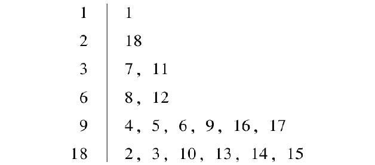
于是，ψ（1）=1，ψ（2）=1，ψ（3）=2，ψ（6）=2，ψ（9）=6，ψ（18）=6．稍加注意可见：与每个指数相关联的数的个数与不大于这个指数且与它互素的数的个数一样多．换句话说，在此（保持第39节的记号）有ψ（d）=φ（d）．现在来证明这个考察结果在一般情形是对的．
Ⅰ．设我们有一个属于指数d的数a（亦即它的d次幂同余于1，并且所有较低次幂不同余于1）．它的所有的幂a2，a3，a4，…，ad或者它们的最小剩余将具有同样的性质（即它们的d次幂同余于1）．因为这可以表述为数a，a2，a3，…，ad的最小剩余（它们完全互异）是同余式xd≡1的根，并且因为这个同余式不可能有多于d个根（显然，除了数a，a2，a3，…，ad的最小剩余外，不可能存在包含在1和p-1之间的数，其指数为d的幂同余于1），所以所有属于指数d的数可在数a，a2，a3，…，ad的最小剩余中找到．我们用下列方法求出它们及它们的个数．如果k是一个与d互素的数，那么ak的所有指数＜d的幂不同余于1；这是因为令1/k（mod d）≡m（见第31节），我们有akm≡a．并且如果ak的e次幂同余于1且e＜d，那么我们将有akme≡1，因此ae≡1，这与假设矛盾．显然ak的最小剩余属于指数d．但是，如果k与d有公因子δ，那么ak的最小剩余就不属于指数d；这是因为此时它的d／δ次幂已经同余于1（因kd／δ可被d整除，故它≡0（modd），从而akd/δ≡1）．我们由此断定：属于指数d的数的个数等于1，2，3，…，d中与d互素的数的个数．但我们要记住，这个结论依赖于我们已经有一个属于指数d的数a的假设．因此，留下的疑问是是否会发生确实没有任何数属于某个指数的情形．于是结论仅限于这样的表述：或者ψ（d）=0，或者ψ（d）=φ（d）．
▶54.Ⅱ．设d，d′，d″，…是数p-1的全部因子，因为所有的数1，2，3，…，p-1分布在其中，所以ψ（d）+ψ（d′）+ψ（d″）+…=p-1．但在第40节我们证明了φ（d）+φ（d′）+φ（d″）+…=p-1，并且由前节可知ψ（d）等于或小于φ（d），但不会大于φ（d）．对于ψ（d′），ψ（d″），…类似的结论也成立．所以如果加项ψ（d′），ψ（d″），…中有一个或多个分别小于φ（d），φ（d′），φ（d″），…中对应的项，那么上面第一个和将不等于第二个和．于是我们最后得到结论：ψ（d）总是等于φ（d），因而不依赖于p-1的大小．
▶55.前节命题有一个特殊情形值得我们注意：总存在具有下列性质的数：没有低于p-1次的幂同余于1，并且在1与p-1之间的这种数的个数等于小于p-1且与p-1互素的数的个数．因为这个定理的证明不像初看起来那么显然，并且由于定理本身的重要性，我们将应用与前节稍微不同的方法来证明．方法的变化有助于阐明其他不清楚之处．设p-1被分解为它的素因子之积，于是p-1=aαbβcγ…；其中a，b，c，…是唯一确定的素数．我们用下列方法完成证明．
Ⅰ．我们总可找到一个（或几个）属于指数aα的数A，以及分别属于指数bβ，cγ，…的数B，C，…．
Ⅱ．所有这些数A，B，C，…之积（或这个积的最小剩余）属于指数p-1．证明如下：
1）设g是1，2，3，…，p-1中的某个数，它不满足同余式x（p-1）／a≡1（mod p）．因为同余式的次数＜p-1，所以并非所有这些数都满足它．现在若g的（p-1）/aα次幂≡h，那么h或它的最小剩余属于指数aα．
这是因为显然h的aα次幂同余于g的p-1次幂，即同余于1．但h的aα-1次幂同余于g的（p-1）/a次幂，亦即它不同余于1．更不用说，h的aα-2，aα-3，…次幂也不可能同余于1．但是h的同余于1的最低次幂的指数（亦即h所属于的指数）必定整除aα（见第48节）．而aα仅能被它自身以及a的低于α次的幂整除，因此aα必然是h所属于的指数．于是上述结论得证．类似地可证存在属于指数bβ，cγ，…的数．
2）如果我们设数A，B，C…之积不属于指数p-1，但属于某个较小的数t，那么t整除p-1（见第48节）；于是p-1）/t是大于1的整数．易见这个商是素数a，b，c，…之一，或者至少可被它们中的一个例如a整除（见第17节）．由此出发可重复与上面相同的推理．于是t整除（p-1）/a，而且乘积ABC…的（p-1）/a次幂也同余于1（见第46节）．但因为诸数B，C，…所属的指数bβ，cγ，…都整除（p-1）/a，所以显然所有数B，C，…（但A除外）的（p-1）/a次幂同余于1．于是我们有
A（p-1）／aBp-1）／aCp-1）／a…≡A（p-1）/a≡1．
由此推出A所属的指数应整除（p-1）/a，亦即（p-1）/aα+1是一个整数．但（p-1）/aα+1=（bβcγ…）／a，不可能是整数（见第15节）．因此得知我们的假定是不成立的，因而乘积ABC…确实属于指数p-1．（证完）
第二个证明看来比第一个长些，但第一个证明不如第二个直接．
▶56.这个定理提供了在数论中必须谨慎从事的标准的例子，因此我们不会将谬误当作必然来接受．朗伯特（Lambert）在上面我们引用过的论文（Nova acta erudit．1769）中提到这个命题，但没有说要证明它．除了欧拉外（见Novi comm．Acad．Petrop．，（18［1773］，1774），“Demonstrationes circa residua ex divisione potestatum per numeros primos resultantia．”）没有任何人试图证明它．特别，可见他的论文的第37节，在此他说为了证明要花费很长的篇幅．但这个最机敏的人给出的这个证明有两个欠缺．一个是它的论文的第31ff节，默认了同余式xn≡1（此处已将他的推理转述为我们的记号）确实有n个不同的根，虽然他以前证明过它的根不可能多于n个，但并没有证明比这更多的结论；另一个是第34节的公式，仅是应用归纳法推导的．
▶57.依照欧拉的叫法，我们将属于指数p-1的数称做原根．因此，如果a是原根，那么幂a，a2，a3，…．ap-1的最小剩余全不相同．于是容易推出我们可以在它们之中找出所有的数1，2，3，…，p-1（因为每组数含有的元素的个数相同）．这意味着任何不被p整除的数同余于a的某个幂．这个值得注意的性质是非常有用的，并且它可以显著地简化与同余式有关的算术运算，非常像引进对数简化平常的算术运算那样．我们任意选取某个原根a作为对于所有不被p整除的数的底．并且如果ae≡b（mod p），那么我们称e为b的指标．例如，如果对于模19我们取原根2作为底，那么我们有
数 1，2，3，4，5，6，7，8，9，10，11，12，13，14，15，16，17，18
指标 0，1，13，2，16，14，6，3，8，17，12，15，5，7，11，4，10，9
另外，显然对于固定的底每个数有多个指标，但它们对于模p-1都是同余的；所以如果有一个关于指标的问题，其中指标对于模p-1同余，那么这些指标将被看作是等价的；同样，当一些数对于模p同余，那么它们也被看作是等价的．
▶58.关于指标的定理与对数的相关定理完全类似．
任意多个因子之积的指标同余于各个因子对于模p-1的指标之和．
一个数的幂的指标对于模p-1同余于这个数的指标与幂的指数之积．
由于这些定理的证明简单，我们从略．
显然，由上面的结果可知，如果我们要造一个表，对所有数给出对于不同的模的指标，那么我们可以在表中略去所有大于模的数以及所有的复合数．这种表的一个例子可见本书书末的表1．其中第一列列出了3到97的素数和素数幂，它们被看作模，紧接每个这样的数在下一列是被取作底的数；然后是逐个素数的指标，排成5个长方条．在顶上的一行中素数仍按与第一列相同的顺序排列，使得容易找出给定的与给定模互素的素数所对应的指标．
例如，若p=67，则数60以12为底的指标≡2Ind 2+Ind 3+Ind 5（mod 66）≡58+9+39≡40．
▶59.如果a，b不被p整除，那么形如a/b（mod p）的表达式（见第31节）的值的指标对于模p-1同余于分子a的指标与分母b的指标之差．
设c是这个值．我们有bc≡a（mod p），因而
Ind b+Ind c≡Ind a（mod p-1）
因此 Ind c≡Ind a-Ind b．
于是，如果我们有两个表，其中一个给出任何数对于任何素数模的指标，另一个给出属于给定指标的数，那么所有一次同余式就可容易解出，因为它们可以简化成模为素数的同余式（见第30节）．例如，给定的同余式
29x+7≡0（mod 47）
可化成
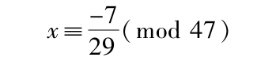
因此
Ind x≡Ind（-7）-Ind 29≡Ind 40-Ind 29≡15-43≡18（mod 46）
因为3的指标是18，所以x≡3（mod 47）．我们没有增添第二个表，但在第6章中将会看到怎样用另一个表来代替它．
▶60.在第31节我们曾用一个特殊符号表示一次同余式的根，所以下面我们也用特殊符号表示简单高次同余式的根．如同
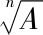
表示方程xn=A的根，我们添上模用（mod p）表示同余式xn≡A（mod p）的根．因为对于模p同余的数被看作是等价的（见第26节），所以表达式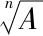
（mod p）有多少个对于模p不同余的值，就说它有多少个值．显然，如果A，B对于模p同余，那么表达式，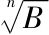
（modp）就是等价的．现在如果给定
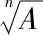
≡x（mod p），那么我们就有n个Ind x≡Ind A（mod p-1）．依照前一章中的法则，我们可以从这个同余式推出Ind x的值，进而得到x的对应值．易见x的值的个数与同余式nInd x≡Ind A（mod p-1）的根的个数相同．当n与p-1互素时，显然只有一个值．但当n，p-1有最大公因子δ时[6]，Ind x就有δ个对p-1互不同余的值，并且只要Ind A被δ整除，就有同样个数的对p互不同余的值．如果这个条件不满足，那么的值不存在．例 我们考虑表达式
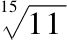
的值．因此必须解同余式15 Ind x≡Ind 11≡6（mod 18）．我们得到三个解Ind x≡4，10，16（mod 18）．x的对应值是6，9，4．▶61.当我们有必要的表时，无论这个方法怎样快，我们都不应该忘记它是非直接的．因此确定直接方法怎样地有效是有意义的．我们在此考虑由前面几节可以推导出的结果；其他讨论需要更深入的研究，将留待第8章[7]．我们从最简单的情形A=1开始．也就是要考察同余式xn≡1（mod p）的根．在此取定某个原根作底后，我们必有n Ind x≡0（mod p-1）．如果n与p-1互素，那么这个同余式仅有一个根；这就是Ind x≡0（mod p-1）．于是在此情形
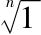
（mod p）有唯一值，即≡1．但当数n，p-1有（最大）公因子δ时，同余式n Ind x≡0（mod p-1）的完全解是x≡0［mod（p-1）／δ］（见第29节）；亦即Ind x对于模p-1应同余于数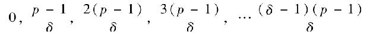
中的一个，亦即它有δ个对于模p-1互不同余的值；因而在此情形x也有δ个不同的值（对模p互不同余）．于是我们看到表达式
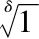
也有δ个不同的值，它们的指标完全与前面的相同．因此表达式（mod p）完全等价于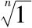
（mod p）；亦即同余式xδ≡1（mod p）与同余式xn≡1（mod p）有相同的根．但如果δ与n不相等，那么前者次数要低些．例 因为3是数15，18的最大公因子，所以
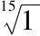
（mod 19）有3个值，这也是表达式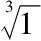
（mod 19）的值．它们是1，7，11．▶62.由这个推理我们可知除非n是p-1的因子，其他形如xn≡1的同余式不一定有解．我们以后将会见到这种形式的同余式总是可以被忽略；至今我们所证明的结果还不足以用来阐明这点．但有一种情形也就是n=2时我们可以在此处理．显然表达式
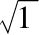
的值是+1和-1，这是因为不可能有多于2个的值，并且除非模=2（在此情形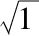
只能有一个值），+1和-1总是互不同余的．因此，如果m与（p-1）/2互素，那么+1和-1也是表达式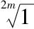
的值．当模使得（p-1）/2就是素数（除非p-1=2m，此时数1，2，3，…，p-1都是根），例如，当p=3，5，7，11，23，47，59，83，107，…时，这总能发生．作为推论，我们注意到，无论取什么原根作底，-1的指标总是≡（p-1）/2（mod p-1）．这是因为2Ind（-1）≡0（mod p-1），因而Ind（-1）或者≡0，或者≡（p-1）/2（mod p-1）．然而，0总是+1的一个指标，而+1和-1必然总有不同的指标（除非p=2，在此我们不必考虑这个情形）．▶63.在第60节我们证明过表达式
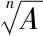
（mod p）或者有δ个不同的值，或者当δ是数n，p-1的最大公因子时值不存在．现在，我们用与证明当A=1时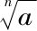
与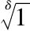
等价同样的方法，更一般地证明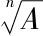
总可以归结为另一个与它等价的表达式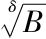
．如果我们用x表示它的某个值，那么我们有xn≡A；还设t是表达式δ／n（mod p-1）的一个值．由第31节，这些值显然存在．现在有xt n≡At，但因tn≡δ（mod p-1），所以xt n≡xδ．于是xδ≡At，因而的任何值也是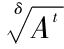
的值．因而每当的值存在，它将完全等价于表达式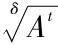
．这个结论正确，因为除非<的值不存在，前者不可能有与后者不同的从来不可能有的值．在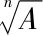
的值不存在的情形，的值仍然可能存在．例 如果我们考察表达式
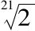
（mod 31）的值，数21和30的最大公因子是3，而3是表达式3/21（mod 30）的值；所以如果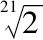
（mod 31）的值存在，那么它将等价于表达式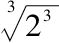
（mod 31）即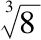
（mod 31）；并且实际上找到后者的值2，10，19也满足前者．▶64.为了避免徒劳地尝试这个运算，我们要研究判断
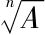
的值是否存在的法则．如果我们有一个指标表，那么这是容易做到的，因为由第60节，显然若以任何原根作底时A的指标被δ整除，则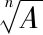
的值存在．在相反的情形值不存在．但我们还可以不应用这样的表进行判断．设A的指标=k．如果它被δ整除，那么k（p-1）/δ被p-1整除，并且反过来也对．但数A（p-1）／δ的指标是k（p-1）／δ．所以若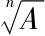
（mod p）的值存在，则A（p-1）／δ同余于1；若值不存在，则它不同余于1．于是在上节的例子中我们有210=1024≡1（mod 31），因而我们推知（mod 31）的值存在．同样的，我们看到，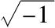
（mod p）当p是4m+1形式时总有一对值；但当p是4m+3形式时值不存在，因为（-1）2m=1，而（-1）2m+1=-1．下面这个机巧的定理通常表述为：若p是4m+1形式的素数，则可以找到平方数a2使得a2+1被p整除；但若p是4m-1形式的，则不可能找到这样的平方数…….是欧拉用这种方式在Novi comm．acad．Petrop．（18［1773］，1774）中证明的．在这多年前，即1760年（Novi comm．acad．Petrop．，5［1754—1755］）中他还在给出另一个证明．在以前的论文（4［175—1753］，1758，25）[8]中他还没有得到这个结果．后来，拉格朗日在Nouv．mém．Acad．Berlin，1775．[9]中给出这个定理的一个证明．我们将在下一章给出定理的另一个证明，它显著地发展了这个主题．▶65.讨论了怎样将表达式（mod p）归结为另一种形式（其中n是p-1的因子），并且得到确定它们的值是否存在的判定法则后，我们来考虑表达式
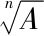
（mod p），其中n是p-1的因子．首先我们给出这个表达式的不同值之间有什么关系，然后研究某些可以经常用来求这些值的方法．第一，当A≡1并且r是表达式
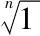
（mod p）的一个值，亦即rn≡1（mod p）时，这个r的所有幂也是这个表达式的值；其中不同的值的个数等于r所属的指数（见第48节）．于是如果r是属于指数n的一个值，那么所有幂r，r2，r3，…，rn（其中可用单位1代替最后一个幂）包括了表达式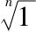
（mod p）的值．我们将在第8章说明有什么方法求这种属于指数n的值．第二，当A不同余于1，并且表达式（mod p）的一个值z已知，那么其他值可用下列方法求出．令表达式
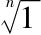
的值是1，r，r2，…，rn-1
（如我们刚才所说）．表达式
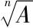
所有的值就是z，zr，zr2，…，zrn-1
显然，所有这些值满足同余式xn≡A，这是因为如果他们中一个≡zrn，那么它的n次幂Znrnκ与A同余（这是显然的，因为rn≡1且zn≡A）．并且由第23节易见所有这些值是不同的．除了这n个值外
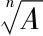
不可能有其他值．所以，例如，如果表达式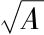
的一个值是z，那么另一个将是-z．由前面所述，我们必然得到结论：不同时确定表达式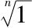
的所有值就不可能求出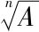
的全部值．▶66.我们提出要做的第二件事是什么时候表达式
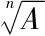
（mod p）的值可以直接确定（自然，要预先假设n是p-1的因子）．当某个值同余于A的幂时就发生这种情形．这是相当经常出现的情形，因而有理由现在就来考虑．如果这个值存在，设它是z，于是z≡Ak且z≡zk（mod p）．由此得A≡Akn”；从而如果我们能找到数k使得A≡Akn，那么Ak就是我们要求的值．但这个条件等同于说1≡kn（mod t），其中t是A所属的指数（见第46节，第48节）．但对于这种同余式可能必须n与t互素．在此情形我们有k≡1/k（mod t）；但若t与n有公因子，那么不存在z值同余于A的幂．▶67.因为要得到这个解必须知道t，让我们考察若不知道它我们该怎么办．首先，显然若（mod p）的值存在（我们在此始终做此假定），则t必整除（p-1）/n．设y是这些值之一；那么我们有yp-1≡1及yn≡A（mod p）；并且取后一同余式两边的（p-1）/n次幂，我们得到A（p-1）／n≡1；因而（p-1）/n可被t整除（见第48节）．现在如果（p-1）/n与n互素，那么前节中的同余式kn≡1对于模（p-1）/n也可解，并且显然，k的任何对于这个模满足这个同余式的值也对于整除（p-1）/n的模t满足该同余式（见第5节）．于是我们得到要求的解．如果（p-1）/n不与n互素，那么从（p-1）/n中去掉同时整除n的素因子．于是我们得到与n互素的数（p-1）/nq．在此我们用q表示所有去掉的素因子之积．现在如果前节条件成立，亦即若t与n互素，则t也与q互素，因而整除（p-1）/nq．所以如果我们解同余式kn≡1（mod（p-1）/nq）（因为n与（p-1）/nq互素，所以它可解），那么k的值对模t也满足这个同余式，这正是我们所要求的．这整个方法在于发现一个用来代替我们不知道的t的数．但是我们必须记住当（p-1）/n不与n互素时，我们要假设前节的条件，如果这个条件不成立，那么结论将是错误的；并且如果我们不小心依照所给法则找到z的一个值，其n次幂不同余于A，那么我们知道条件不足，而且方法无效．
▶68.但是甚至在此情形做有关的工作也常常是有益的，并且研究错误值与正确值间的关系也是值得的．于是设k，z已经被适当地[10]确定但zn不≡A（modp）．那么，若我们仅能确定表达式（mod p）的值，则用z乘这些值就可得到的值．这是因为如果v是
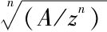
的一个值，那么我们就有（vz）n≡A．但因为A/zn（mod p）所属的指数经常比A的低，所以表达式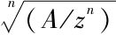
要比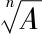
简单．更精细地说，如果数t，q的最大公因子是d，那么，如我们要看到的，A/zn（mod p）将属于指数d．（用Ak）代入z，我们得A／zn≡1/Akn-1（mod p）．但kn-1被（p-1）/nq整除，且（p-1）/n被t整除（见前节）；（由后者知）（p-1）/nd被t/d整除[11]．因为（依假设）t/d与q/d互素[12]，所以（p-1）/nd也被tq/d2整除，亦即（p-1）/nq被t/d整除[13]．于是kn-1被t/d整除，因而（kn-1）d被t整除．这个最后结果向我们给出A（kn-1）d≡1（mod p），由此我们推出A/zn的d次幂同余于1．容易证明A/zn所属指数不可能小于d，但因为对于我们的目的这不是所要求的，所以我们在此不再对它作进一步论述．因此我们可以确信A/zn（mod p）所属的指数总是要比A的指数小，除非t整除q，因而d=t．但A/zn所属的指数比A的指数小有什么优越性？可以作为A的数比可以作为A/zn的数多，并且当我们要对同一个模解多个形式的表达式，我们就有能够从同一个计算推出几个结果的优点．于是，例如，如果我们知道表达式
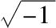
（mod 29）的值（它们是±12），那么我们总可以至少确定表达式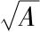
（mod 29）的一个值．由前节，易见当t是奇数时我们可以怎样直接确定这个表达式的一个值，并且当t是偶数时d=2；除非-1不是属于指数2的数．例 我们要解
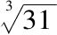
（mod 37）．这里p-1=36，n=3，（p-1）/3=12，因而q=3．现在我们需要3k≡1（mod 4），所以令k=3即可．于是z≡313（mod 37）≡6，并且63≡31（mod 37）成立．如果已知表达式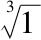
（mod 37）的值，那么可以确定表达式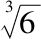
的其余值，（mod 37）的值是1，10，26．将它们乘以6，我们得到另两个值≡23，8．然而，如果我们要求表达式（mod 37）的值，那么n=2，（p-1）/n=18，因而q=2．因为我们需要2k≡1（mod 9），所以k≡5（mod 9）．并且z≡35≡21（mod 37）；但212不≡3，而是≡34；另一方面，3/34（mod 37）≡-1以及（mod 37）≡±6；于是我们求得正确值±6·21≡±15．
这实际上就是我们所能说的关于这种表达式的解的全部结果．显然，直接方法经常相当长，但数论中几乎所有直接方法都是这样；不过已经证明它们是有用的．此外，超出我们的研究目的逐个讲述特殊技巧需要熟悉这个领域的各种工作．
▶69.我们现在转过来考虑原根．我们已经证明所有的当我们取任何原根作底时其指标都与p-1互素的数也是原根，并且只有这些数是原根；因此我们同时得知原根的个数（见第53节）．一般地，要我们自己判断确定哪个根作为底．在此，就像对数运算中那样，我们可以有多种不同的系统[14]．让我们来考察不同的系统是怎样联系的．设a，b是两个原根，m是另一个数．当我们取a作为我们的底时，数b的指标≡β，数m的指标≡μ（mod p-1）．但当我们取b作为我们的底时，数a的指标≡α，数m的指标≡ν（mod p-1）．现在有aβ≡b[15]，及aαβ≡bα≡a（mod p）（依假设），所以αβ≡1（mod p-1）．类似地我们得ν≡αμ及μ≡βν（mod p-1）．因此，如果我们有一个对于底a构造的指标表，那么就容易将它转换到另一个以b为底的系统．这是因为如果对于底a数b的指标≡β，那么对于底b数a的指标将≡1/β（mod p-1），并且若用这个数乘表中所有的指标我们就可得到对于底b的所有指标．
▶70.虽然依据取作底的不同的原根一个给定的数可以有不同的指标，但它们有一点是一致的——这些指标中每一个与p-1的最大公因子都是相同的．这是因为，若对于底a，给定的数的指标是m，而对于底b，指标是n，并且这些数（m和n）与p-1的最大公因子（分别）是μ，ν且不相等，那么其中一个较大；例如，μ＞ν，因而μ不整除n．现在设b为底，令α是a的指标，则我们将有n≡αm（mod p-1）（见前节），因而μ整除n．（证完）
我们还可以从这个给定数的指标与p-1的最大公因子等于（p-1）/t这个事实看到它与底无关．这里t是我们考虑其指标的那个数所属的指数．因为如果对任意一个底指标是k，那么t是乘以k后给出p-1的某个倍数的最小的（非零）数（见第48节，第58节），这就是说，表达式0/k（mod p-1）不为零．于是不难由第29节推出这等于数k和p-1的最大公因子．
▶71.总可以取一个底使得属于指数t的数匹配某个预先确定的一个指标，而这个指标与p-1的最大公因子=（p-1）/t．用d表示这个最大公因子，设预先确定的指标≡dm，并设给出的数的指标≡dn．在此选取原根a作底；那么m，n与（p-1）/d或t互素．于是，如果ε是表达式dn/dm（mod p-1）的值，并且同时与p-1互素，那么aε是一个原根．以此为底给出的数将有指标dm，这正是我们想要的（因为aεd m≡ad m≡给出的数）．为了证明表达式dn/dm（mod p-1）有与p-1互素的值，我们继续进行下列的推理．这个表达式等价于n／m（mod（p-1）/d），或等价于n／m（mod t）（见第31节，第2节），并且它的所有值与t互素；这是因为如果任何一个值e与t有公因子，那么这个因子也整除me，因而整除n（因为me对于模t同余于n）．这与假设矛盾（假设要求n与t互素）．于是当p-1的所有素因子整除t时，表达式n／m（mod t）的所有值与p-1互素，并且它们的个数=d．但当p-1有其他的素因子f，g，h，…，且不整除t时，那么表达式n／m（mod t）的一个值≡e．但因为所有的数t，f，g，h，…与（它们中）其他每个数互素，所以可以找到数ε，它对于t与e同余，并且对于f，g，h，…同余于其他的与这些数互素的数（见第32节）．这样的数不能被p-1的素因子整除，因而与p-1互素，这正是所要求的．由组合论我们容易推出这种值的个数等于
但为了不至于离题太远，我们略去证明．对于我们的目的在任何情形它都不是必不可少的．
▶72.虽然一般说来选取原根作底完全是任意的，但同时某些底将被证明比其他底具有特殊的优点．在表1中当10是原根时我们总是选它作底；在其他情形我们总是选取底使得数10的指标尽可能最小；亦即我们令它=（p-1）/t，此处t是10所属的指数．我们将在第6章指出这样做的优点，在那里为了其他目的使用了这个表．但在此，如我们在前节看到的，还是有一些选择的自由的．因而我们总是选取最小的满足条件的原根．例如，对于p=73，在此有t=8及d=9，aε有72/8·2/3亦即6个值，它们是5，14，20，28，39，40．我们选取其中最小的5作底．
▶73.求原根很大程度上被归结为尝试和误差．如果我们把在第55节所说的方法与上面所指出的关于同余式xn≡1的解的结果结合在一起，我们就具备了可以用直接方法求原根的所有条件．欧拉（Opuscula Analytica，1）[16]承认设计这些数是极为困难的，并且它们的性质是数的最深刻的秘密之一．但是它们可以用下列方法足够容易地确定．熟练的数学家知道怎样通过各种方法简化冗长的计算，而且在此经验是比教训更好的老师．
1）任意选取一个与p互素的数a（我们总是用字母p表示模；通常如果我们选取最小可能的数——例如数2，计算要简单些）．然后确定它的周期（见第46节），亦即它的幂的最小剩余，直到得到一个幂at，它的最小剩余是1[17]．如果t=p-1，那么a是一个原根．
2）但若t＜p-1，则选取另一个数b，它不含在a的周期中，并且用同样的方法研究它的周期．如果我们用u表示b所属的指数，那么我们看到u不可能等于t或t的因子；因若不然我们将有bt≡1，但a的周期含有所有t次幂同余于1的数（第53节），因而这不可能．现在如果u=p-1，那么b就是一个原根；但如果u≠p-1但是是t的倍数，那么我们得到的就更多——我们得知我们可以找到一个属于更高的指数的数，因而我们将更接近于我们的目的，即找一个属于最大指数的数．现在如果u≠p-1，并且不是t的倍数，那么我们不过是能找到一个属于比t和u大的指数的数，亦即这个数所属的指数等于t和u的最小公倍数．设这个数等于y，并将y分解为两个互素因子m，n之积，使得其中一个整除t，另一个整除u[18]．因此a的t／m次幂≡A，b的u／n次幂≡B（mod p），并且积AB是属于指数y的数．这是显然的，因为a属于指数m，而B属于指数n，且因为m，n互素，所以乘积AB属于（指数）mn．实际上我们可以用与第2章第55节中同样的方法证明这点．
3）现若y=p-1，则AB就是原根；若不然，则我们应用另一个不在AB的周期中出现的数如前继续进行．这样或者得到一个原根，或者得到一个数，它所属的指数比y的大，或者（如前）借助它找到一个数，其所属的指数比y的大．因为我们重复这个运算得到的这些数属于不断增加的指数，所以最终必然发现一个数属于最大指数．这个数即为一个原根．（证完）
▶74.通过例子可使这更为清楚．设p=73，让我们来考察原根．我们首先用数2来尝试，它的周期是[19]
1，2，4，8，16，32，64，55，37，1…
0，1，2，3，4，5，6，7，8，9…．
因为9次幂同余于1，所以2不是原根．我们尝试不出现在这个周期中的另一个数，例如3．它的周期是
1，3，9，27，8，24，72，70，64，46，65，49，1，…
0，1，2，3，4，5，6，7，8，9，10，11，12…．
因此3不是原根．但2，3所属的指数（即数9，12）的最小公倍数是36，如我们在前节所说，将它分解为因子9和4之积，求出2的9/9次幂及3的3次幂，它们的积是54，它属于指数36．最后我们计算54的周期，并用一个不含在其中的数，例如5，我们发现它是原根．
▶75.我们略去这个结论的证明，并将给出某些由于其简明性而值得注意的命题．
任何一个数的周期中的所有数之积，当周期中数的个数亦即这个数所属的指数是奇数时，≡1，当指数是偶数时，≡-1．
例 对于模13，数5的周期由数1，5，12，8组成，其积480≡-1（mod 13）．
对于同一个模，数3的周期由数1，3，9组成，它们的积27≡1（mod 13）．
证 设这个数所属的指数是t，且这个数的指标是（p-1）/t．如果我们选取适当的底这总是可以做到的（见第71节）．于是周期中所有数之积的指标
亦即≡0（mod p-1）（当t是奇数），及≡（p-1）/2（当t是偶数）；在前一情形这个积≡1（mod p），而在后一情形≡-1（mod p）（见第62节）．（证完）
▶76.如果前述定理中的数是原根，那么它的周期含有所有数1，2，3，…，p-1．它们的积总是≡-1（因为除非p=2，p-1总是偶数；在p=2的情形-1和+1等价）．这个机巧的定理通常说作：所有小于一个给定素数的数之积加1可被这个素数整除．它由华林第一个发表且将它归功于威尔逊：见Warring，Meditationes Algebraicae（3d ed．，Cambridge，1782）[20]．但他们两人都没能证明这个定理，并且华林坦承由于没有记号可以用来表示素数使得证明成为很困难的事．但依我们的看法，这种真理应当从内在的思想而不是从记号中取得．后来，拉格朗日给出了一个证明（Nouv．mém．Acad．Berlin，1771）[21]．他通过考虑展开乘积
（x+1）（x+2）（x+3）…（x+p-1）
产生的系数进行证明．设这个乘积
≡xp-1+Axp-1+Bxp-3+…+Mx+N，
那么系数A，B，…，M可被p整除，且N=1·2·3…（p-1）．如果x=1，这个乘积将被p整除；从而它≡1+N（mod p），所以1+N必然被p整除．
最后，欧拉在Opuscula Analytica，1[22]中给出一个证明，它与我们给出的证明相一致．因为如此杰出的数学家们并不认为这个定理不值得他们注意，所以我们不揣冒昧再补充另一个证明．
▶77.当两个数a，b的乘积对于模p同余于1时，依照欧拉，我们称它们相伴．于是根据前面所说，任何小于p的正数都有一个小于p的相伴的正数，并且是唯一的．容易证明数1，2，3，…，p-1中，1和p-1是唯一的两个不与其他数相伴的数[23]；这是因为相伴数之积是同余式x2≡1的根[24]，并且因为这个同余式是2次的，所以它的根不可能多于2个，亦即只有1和p-1．除去这两个数外，其余的数2，3，…，p-2成对地相伴．因此它们的积≡1，而所有数1，2，3，…，p-1之积≡p-1，或≡-1．（证完）
例如，对于p=13，数2，3，4，…，11相伴情况如下：2和7；3和9；4和10；5和8；6和11．亦即2·7≡1，3·9≡1，等等；因而1·2·3…12≡-1．
▶78.威尔逊定理可以更一般地表述如下：所有小于一个给定的数A并且与A互素的数之积对于A同余于+1或-1．当A是pm或2pm形式（其中p为不等于2的素数）及A=4时取-1．所有其他情形取+1．威尔逊提出的定理包含在前一种情形中．例如，对于A=15，数1，2，4，7，8，11，13，14之积≡1（mod 15）．为简洁起见我们略去证明，只是提请注意它可以像前节那样证明，不同的是由于某些特殊的考虑同余式x2≡1的根可以多于2个．如同75节那样并且结合我们即将要讲到的关于非素数模的结果，我们还可以由考虑指标得到一个证明．
▶79.我们现在转过来列举一些其他命题（见第75节）．
任何数的周期中的所有数之和≡0．正如在第75节的例子中见到的，1+5+12+8=26≡0（mod 13）．
证 设我们考虑其周期的数=a，它所属的指数=t，那么它的周期中的所有数之和
但at-1≡0；所以这个和总是≡0（见第22节），也许当a-1被p整除亦即a≡1时是例外；而若认为此时作为周期仅是一项，则可将例外情形排除．
▶80.所有原根之积≡1，除非p=3；因为此时只有一个原根2．
证 如果取任意原根作底，那么所有原根的指标都与p-1互素，并且小于p-1．但这些数的和，亦即所有原根之积的指标≡0（mod p-1），因而这个积≡1（mod p）；又因为易见如果k是与p-1互素的数，那么p-1-k也与p-1互素，因而与p-1互素的数之和由一些数对相加而成，其中每个数对之和可被p-1整除（除非p-1=2亦即p=3，k不可能等于p-1-k；因为显然在所有其他情形（p-1）/2不与p-1互素）．
▶81.所有原根之和或者≡0（当p-1被某个平方数整除），或者≡±1（mod p）（如果p-1是不相等的素数之积；且若这些素因子的个数是偶数则取正号，若此个数是奇数则取负号）．
例 1．对于p=13原根是2，6，7，11，它们的和是26≡0（mod 13）．
2.对于p=11原根是2，6，7，8，它们的和是23≡+1（mod 11）．
3．对于p=31原根是3，11，12，13，17，21，22，24，它们的和是123≡-1（mod 31）．
证 我们上面（第55节的Ⅱ）已经证明：如果p-1=aαbβcγ…（此处a，b，c，…是不相等的素数），而A，B，C，…分别是任意属于指数aα，bβ，cγ，…的数，那么所有乘积ABC…都是原根．容易证明任何原根可以表示为这种形式的乘积，而且实际上是唯一的[25]．
由此可知这些乘积可以作为原根．但因为这些乘积中必定将A的所有值和B的所有值等组合起来，因此，如我们从组合论所知，所有这些乘积之和等于A的所有值之和乘以B的所有值之和，乘以C的所有值之和等所得到的乘积．将A的所有值，B的所有值等（分别）用A，A′，A″，…；B，B′，B″，…；等等表示，而所有原根之和
≡（A+A′+A″+…）（B+B′+B″+…）…．
我们现在断言：若指数α=1，则和A+A′+A″+…≡-1（mod p），但若α＞1，则此和≡0，并且对于其余的β，γ…同样的结论也成立．如果我们证明了这个论断，那么我们定理的正确性是显然的．这是因为当p-1被某个平方数整除时，指数α，β，γ，…之一将大于1，因而上述与所有原根之和同余的乘积中有一个因子≡0[26]，因而这个乘积本身也≡0．但当p-1不被任何平方数整除时，所有指数α，β，γ，…=1，因而同余于所有原根之和的乘积中的每个因子≡-1，而且因子个数等于数a，b，c，…的个数．于是所有原根之和≡±1，符号依照因子个数是偶数或奇数选取．下面我们来证明上述断言．
1）当α=1且数A属于指数a时，其他属于此指数的数是A2，A3，…，Aa-1．
但因
1+A+A2+A3+…+Aa-1
是一个完整的周期的和，所以≡0（见第79节），并且
A+A2+A3+…+Aa-1≡-1．
2）当α＞1并且数A属于指数aα时，其他属于这个指数的数可以从A2，A3，A4，…，中删去Aa，A2a，A3a，…而得到（见第53节）；并且它们的和
亦即同余于两个周期之差，所以≡0．（证完）
▶82.我们所说的这一切都是预先假设模是素数．剩下的事是考虑用合数作模的情形．但因为在此情形没有像前面情形中那样机巧的性质，并且也不需要精妙的按巧来发现它们（因为几乎每个结果都可以应用前面的原理推出），所以详尽无遗地处理所有细节是冗长乏味且不必要的．因此我们仅阐明在这种情形有什么与前面情形是公共的以及什么是它自身特有的．
▶83.第45—48节的命题已经在一般情形证明．但第49节的命题必须作如下修改：
如果f表示与m互素且小于m的数的个数，亦即f=φ（m）（见第38节）；并且a是给定的与m互素的数，那么对于模m同余于1的a的最低次幂的指数t=f或f的因子．
第49节命题的证明在此情形仍然是有效的，如果我们用m代p，f代p-1，并用与m互素且小于m的数代替数1，2，3，…，p-1．我们留待读者做此事．但其他的证明（第50节，第51节）我们认为不可能应用在此情形而不引起混淆．并且对于第52节及其后的各节中的命题在模为素数幂的情形和模可被1个以上的素数整除的情形存在很大差别．因此我们考虑前一种类型的模．
▶84.如果p是一个素数，并且模m=pn，那么我们有f=pn-1（p-1）（见第38节）．现在若将我们在第53节和第54节中所说的结果应用于这种情形，并且像前节那样作必要的修改，我们就可发现，只要我们首先证明形如xt-1≡0（mod pn）的同余式不可能有多于t个不同的根，那么在那里我们所说的每个结果在此也成立．我们对于第43节中的一个更一般的命题证明过它对于素数模是正确的；但这个命题仅对素数模成立而不能应用于这种情形．不过，我们将用特殊方法证明这个命题对这个特殊情形是正确的．在第8章我们还要更容易地证明它．
▶85.我们现在来证明下列定理：
如果数t和pn-1（p-1）的最大公因子是e，那么同余式xt≡1（mod pn）有e个不同的根．
设e=kpv，其中k不含有因子p．因而它整除数p-1．并且同余式xt≡1对于模p有k个不同的根．如果我们将它们记为A，B，C，…，那么这个同余式对于模pn的每个根对于模p同余于数A，B，C，…中的一个．现在我们来证明同余式xt≡1（mod pn）有pv个根对于模p同余于A，有同样多个根对于模p同余于B，等等．由此得知所有根的个数，如我们所说，是kpv亦即e．为证明这个论断，我们首先证明，如果α是对于模p同余于A的根，那么
α+pn-v，α+2pn-v，α+3pn-v，…，α+（pv-1）n-v
也是根．其次证明，对于模p同余于A的数不可能是根，除非它们是α+hpn-v（h是整数）的形式．这样显然有pv个不同的根，而且不会更多．对于同余于B，C等的根这同样正确．第三，我们阐明怎样总可找到对于p同余于A的根．
▶86.定理 记号如前节，如果数t可被pv整除，但不被pv+1整除，那么我们有
（α+hpu）t-αt≡0（mod pμ+ν，并且≡αt-1hpμt（mod pμ+ν+1）．
当p=2和μ=1时定理的第二部分不成立．
将二项式展开后，只要我们能证明从第二项起所有的项都能被pμ+ν+1整除，那么定理就得证．但因为考虑到系数的分母会引起一些理解上的困难，我们宁愿采取下列方法．
让我们首先设μ＞1和ν=1，于是我们有
xt-yt=（x-y）（xt-1+xt-2y+xt-3y2+…+yt-1），
（α+hpμ）t-at=hpμ［（α+hpμ）t-1+（α+hpμ）t-2α+…+αt-1］．
但因为α+hpμ≡α（mod p2），所以每个项（α+hpμ）t-1，（α+hpμ）t-2α，…都≡αt-1（mod p2），并且所有这些项之和≡tαt-1（mod p2）；亦即它们有形式tαt-1+Vp2，其中V是任意数．于是（α+hpμ）t-αt有形式αt-1hpμt+Vhpμ+2，因而≡αt-1hpμt（mod pμ+2），并且≡0（mod pμ+1）．因此在此情形定理获证．
现在保持μ＞1，如果定理对于ν的其他值不正确，那么必然存在一个界限，当ν不超过它时定理总是正确的，而在此界限外定理不成立．设使定理不成立的ν的最小值等于φ．易见如果t被pφ-1整除，但不被pφ整除，那么定理仍然正确，但如果用tp代替t，那么不再成立．所以我们有
（α+hpμ）t≡αt+αt-1hpμt（mod pμ+φ），
于是（α+hpμ）t≡αt+αt-1hpμt+upμ+φ，其中u是一个整数．但因为定理已经对ν=1证明，所以我们得到
（αt+αt-1hpμt+upμ+φ）p≡αtp+αtp-1hpμ+1+αt（p-1）upμ+φ+1（mod pμ+φ+1），
因而
（α+hpμ）tp≡αtp+αtp-1hpμtp（mod pμ+φ+1），
亦即若tp代替t也就是ν=φ时定理正确．但这与假设矛盾，所以定理对所有ν成立．
▶87.剩下μ=1的情形．应用与前节非常类似的方法可以不借助二项式定理证明
（α+hp）t-1≡αt-1+αt-2（t-1）hp（mod p2），
α（α+hp）t-2≡αt-1+αt-2（t-2）hp，
α2（α+hp）t-3≡αt-1+αt-2（t-3）hp，
……
并且它们的和（因为项数为t）
但因为p整除t，所以如在前节所指出，除p=2外在所有情形p也整除（t-1）t/2．而在其他情形我们有（t-1）tat-2hp/2≡0（mod p2），并且与前节同样，上述和≡tαt-1（mod p2）．证明的其余部分可同样地进行．
除p=2外一般结果是
（α+hpμ）t≡αt（mod pμ+ν），
并且只要h不被p整除，而且pν是p的整除t的最高次幂，那么当p的任何比pμ+ν高的幂做模时（α+hpμ）t不≡αt．
由此我们立即可以推出我们在第85节提出要证明的命题：
首先，如果αt≡1，那么我们也有（α+hpn-ν）t≡1（mod pn）．
第二，如果某个数α′对于模p同余于A，那么因而也同余于α，但对于模pn-ν不同余于α，并且如果它满足同余式xt≡1（mod pn），那么我们令α′=α+lpλ，其中l不被p整除，于是λ＜n-ν，从而（α+lpλ）t对于模pλ+ν同余于αt，但对于模pn（这是较高的幂）则不同余（于αt）．因此α′不是同余式xt≡1的根．
▶88.第三，我们来求同余式xt≡1（mod pn）的同余于A的根．在此我们可以仅当已知这个同余式对于模pn-1的一个根时说明如何做．显然这就足够了，因为我们可以从模p（A对于它是一个根）达到模p2，并且逐步达到所有的幂．
于是，设α是同余式xt≡1（mod pn-1）的一个根．我们来求同一个同余式对于模pn的根．设这个根=α+hpn-ν-1．由前节，它必定有这种形式（我们将单独考虑ν=n-1，但要注意ν绝不可能大于n-1）．于是我们有
（α+hpn-ν-1）t≡1（mod pn-1）．
但是
（α+hpn-ν-1）t≡αt+αt-1htpn-ν-1（mod pn）．
因此，如果选取h使得1≡αt+αt-1htpn-ν-1（mod pn）或使得（（αt-1）/pn-1）+αt-1h（t/pv）被p整除［因为依据假设，1≡αt（mod pn-1），而且t被p整除］，那么我们就得到所要的根．显然由前节，这是可以做到的，这是因为我们预先假设了t不能被p的比pv更高的幂整除，因而αt-1（t/pv）与p互素．
但如果ν=n-1，亦即t被pn-1整除或被p的更高的幂整除，那么任何对于模p满足同余式xt≡1的值A对于模pn也满足这个同余式．因为如果我们令t=pn-1τ，那么我们有t≡τ（mod p-1）；因而由于At≡1（mod p）我们也有Aτ≡1（mod p）．于是令Aτ=1+hp即有At=（1+hp）pn-1≡1（mod pn）（见第87节）．
▶89.借助定理：同余式xt≡1不可能有多于t个不同的根，在第57节及其后几节中我们所证明的每个结果当以素数幂为模时也（可证明）是正确的；并且如果我们把属于指数pn-1（p-1）的数，这就是说，所有这些数包括它们周期中不被p整除的数，称作原根，那么在此我们也有原根（概念）．我们所说过的关于指标和它们的应用以及关于同余式xt≡1的解的每个结果也都适用于素数幂为模的情形；因为证明没有困难，所以没有必要在此重复．我们以前讲过怎样从同余式xt≡1对于模p的根导出这个同余式对于模pn的根．现在我们要对前面我们排除的情形，即模是数2的某些幂的情形进行一些补充考察．
▶90.如果数2的某个高于2次的幂，例如2n作模，那么任何奇数的2n-2次幂同余于1．
例如，38=6561≡1（mod 32）．
对于任何1+4h以及-1+4h形式的奇数，命题可由第86节的定理立即推出．
于是，因为对于模2n任何奇数所属的指数必定是2n-2的因子，所以容易判断它属于数1，2，4，8，…，2n-2中的哪一个．设所给的数=4h±1，并且整除h的2的最高次幂=m（m可以=0，此时h是奇数）；那么若n＞m+2，则所给数所属的指数=2n-m-2；但若n≤m+2，则所给数≡±1，因而它或属于指数1，或属于指数2．因为容易从第86节推出±1+2m+2k（它等价于4h±1）形式的数的2n-m-2次幂对于模2n同余于1，并且它的以2的较低次幂为指数的幂不同余于1．因此任何8k+3或8k+5形式的数属于指数2n-2．
▶91.由此可见在这里我们没有上文意义下的原根；这就是说，不存在这样的数，它的周期中包括所有小于模并且与模互素的数．但显然我们有它的一个类似．因为我们发现对于8k+3形式的数，其奇数次幂也是8k+3形式的，而偶数次幂是8k+1形式的，它的幂不可能是8k+5和8k+7形式的．于是，因为对于8k+3形式的数其周期由2n-2项8k+3或8k+1形式的数组成，并且因为小于模的这种形式的数不多于2n-2个，所以显然任何8k+1或8k+3形式的数对于模2n同余于某个8k+3形式的数的幂．类似地，我们可以证明8k+5形式的数的周期包含所有8k+1和8k+5形式的数．因此，如果我们取8k+5形式的数作底，那么我们将对所有8k+1和8k+5形式的正数和所有8k+3和8k+7形式的负数找到真指标．并且我们还必须将对于2n-2同余的指标看作等价的．对于表1，其中对模16，32和64总是取5作底，我们要稍微做一些解释（对模8表是不必要的）．例如，数19是8n+3形式的，所以必须取负号，对于模64有指标7．这意味着57≡-19（mod 64）．如果我们取8n+1和8n+5形式的负数及8n+3和8n+7的正数，那么就必须给它们虚指标（权且这样称呼）．如果我们这样做，指标计算就可归结为非常简单的算法．但因为如果我们希望严格地对此加以研究，那么我们将会离题太远，所以我们将此留待其他机会，那时我们可以更加细致地考虑虚量的理论．就我们所知还没有任何人给出这个主题的清晰的处理．有经验的数学家将会发现发展这个算法是容易的．只要掌握了上面所说的原理，缺少训练的人也可以使用我们的表．应用算法的人即使对虚算法的现代研究一无所知同样可以做这件事．
▶92.几乎所有关于对多个素数组成的模的幂剩余的结果都可以由同余的一般理论推出．我们以后将非常详细地说明怎样将对于由几个素数组成的模的同余式归结为模为素数或素数幂的同余式．因此我们现在不在这个主题上过多停留．我们在此仅注意对于其他模不成立的最机巧的性质，亦即这种性质：它保证我们始终能够找到数使得在其周期中包括所有与模互素的数．但有一种情形甚至在此我们就可找到这样的数．它出现在模是一个素数的2倍或素数幂的2倍时．因为如果模m归结为形式AaBbCc…，其中A，B，C，…是不同的素数，并且用字母α表示Aa-1（A-1），用字母β表示Bb-1（B-1），…，那么选取数z与m互素，我们得到zα≡1（mod Aα），zβ≡1（mod Bb），…．并且如果μ是数α，β，γ，…的最小公倍数，那么我们对于所有的模Aα，Bb，…有zμ≡1，因而对于等于它们的乘积的m同余式也成立．但除了m是一个素数的2倍或素数幂的2倍的情形，数α，β，γ，…的最小公倍数小于它们的乘积（数α，β，γ，…不可能两两互素，因为它们有公因子2）．于是周期中项的个数不可能等于小于模且与模互素的数的个数，因为这些数的个数等于α，β，γ，…的乘积．例如，对于m=1001任何与m互素的数的60次幂同余于1，因为60是数6，10，12的最小公倍数．模是一个素数的2倍或素数幂的2倍的情形完全类似于模是一个素数的或素数幂的情形．
▶93.我们已经提到过关于与本章有相同研究主题的其他几何学家的著作．对于想要了解比我们所许可的简洁程度更细致的讨论的读者，我们推荐下列欧拉的专著，由于其清晰性和洞察力使这位伟人远远超过所有其他评论家所做的论述：“Theoremata circa residua ex divisione potestatum relicta．”（Novicomm．acad．Petrop．，7［1758-59］，1761．）“Demonsttationes circa residua ex divisione potestatum per numeros primos resultantia，”（ibid．，18［1773］，1774．）对于这些文献我们还要添上Opuscula Analytica，1，Diss．5；Diss．8[27]．
[1]这个文献是1640年10月18日费马给夫雷涅克尔（Bernard Frénicle de Bessy）（1607—1675）的信．
[2]在早先的评论（Comm acad Petrop，6［1723—1733］，1738［“Observationes de theoremare quodam Fermatiano aliisque ad numeros primos spectantibus”］）中，这位伟人还没有得到这个结果，在Maupertuis和König之间关于最小作用原理的著名争论，也是一个导致奇怪的离题的争论中，König宣称他手中有莱布尼茨的一份手稿，它包含这个定理的一个证明，与欧拉的证明非常类似．我们不想否定这个证据，但莱布尼茨肯定没有公布过他的发现．对此可见Hist de l′Acade Prusse，6［1750］，1752［这个文献是“Lettre de M EuleràM Merian（traduit du Latin）”，它于1752年9月3日由柏林寄出．］
[3]“Adnotata quaedam de numeris eorumque anatomia”．
[4]“Solutio problematis de investigatione trium numerorum，quorum tan summa quarm productum necnon summa productorum ex binissint numeri quadrati．”
[5]原书记为ψd．类似地，后文中将φd改记为φ（d）．
[6]此处δ＞1，即n和p-1不互素．下文类似．
[7]第8章没有发表．
[8]“De mumeris qui sunt aggregata duorum quadratorum”．
[9]“Suite des Recherhes d′arithmétipue imprimées dans le volume de l′année 1773”．
[10]即z≡Ak（mod p）．
[11]此外，由q的定义知（p-1）/nd也被q/d整除．
[12]因为上面已设t，q的最大公因子是d．
[13]因为（p-1）/nd被tq/d2整除，所以（（p-1）/nd）/（tq/d2）是整数，而后者等于（（p-1）／nq）／（t／d）．
[14]但不同点在于对于对数系统的个数是无限的，而在此系统个数与原根个数一样多，因为显然同余的底产生相同的系统．
[15]原文误作αβ≡b．
[16]“Disquisitio accuratior circa residua ex divisione qudratorum altiorumque potestatum per numeros primos relicta．”
[17]不必知道这些幂，因为最小剩余可以由前一个幂的最小剩余容易地得到．
[18]由第18节我们看到可以怎样不困难地做到这一点．预先将y分解为不同素数或不同素数之幂的积．每个这些素因子整除t或u（或同时整除它们）．依据这些素因子整除t，u中哪一个就将它分配给t或分配给u．若同时整除t，u，则可任意分配．令分配给t的素因子之积=m，其余素因子之积=n．显然，m整除t，n整除u，并且mn=y．
[19]其中第2行是相应的2的幂的次数．下文类似．
[20]在拉格朗日引用过的1770年的第一版中．
[21]“Démonstration d un théoreme noveau 1 concernant les nombres premiers”
[22]“Miscellanea Analytica Theorema a Cl Waring sine demonstratione propositum”
[23]原书此句有误，已改．
[24]原书此句有误，已改．
[25]设数a，b，c，…这样地确定，使得a≡1（mod aα），且≡0（mod bβc…）；b≡1（mod bβ），且≡0（mod aαcγ…）；等等（见第32节）；因而a+b+c+…≡1（modp-1）（见第19节）．现在如果任意一个原根r表示为乘积形式ABC…，那么我们得到A≡ra，B≡rb，C≡rc，…，并且A属于指数aα，B属于指数bβ，…；而乘积ABC…≡r（mod p）；并且易见A，B，C，…不可能用其它方法确定．
[26]原书此句有误，已改．
[27]对于论文5的标题，见论文8的脚注9：“De quisbusdam eximiis proprietatibus circa divisores potestarum occurrentibus”